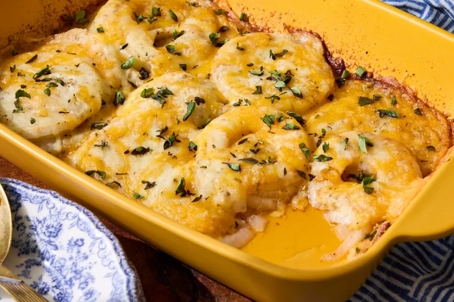

Home
Tennessee Onions

Description
These Tennessee onions, baked with Cajun seasoning and 3 kinds of cheese, are so tender and sweet.
They're the perfect accompaniment to any meat.
Ingredients ( 8 Servings )
-
3 sweet onions, sliced into 1/4-inch slices
-
1 1/2 teaspoons Cajun seasoning, or more to taste
-
1 teaspoon garlic powder
-
4 tablespoons butter, cut into 6 slices
-
1 cup shredded Cheddar cheese
-
1 cup shredded mozzarella cheese
-
1/2 teaspoon dried oregano
-
1/2 cup grated Parmesan cheese
Preparation Steps
-
Gather the ingredients. Preheat the oven to 350 degrees F (175 degrees C).
-
Arrange 1/2 of the onions on the bottom of a 9x13-inch casserole dish. Sprinkle with half the Cajun seasoning and half the garlic powder. Repeat with remaining onions, seasoning, and garlic powder.
-
Arrange butter on top of the onions and top evenly with Cheddar and mozzarella cheese. Sprinkle oregano over cheese and top with Parmesan cheese.
-
Bake in the preheated oven until onions are tender and cheese is melted, bubbly, and golden brown around the edges, about 35 minutes.
Nutritional Info
-
198 Calories
-
14g Fat
-
9g Carbs
-
9g Protein